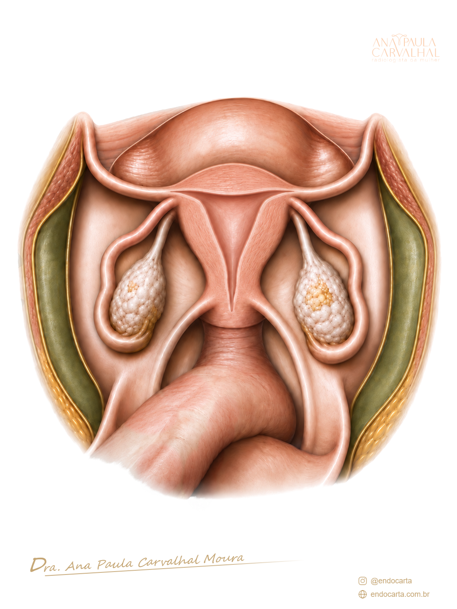

Dra. Ana Paula Carvalhal Moura
Prévia da logo e da assinatura nos mapas do Endocarta. Exemplos sem dados de pacientes.
No exemplo em escala de cinza, a anatomia fica em cinza; a logo e a assinatura mantêm suas cores.

Prévia da logo e da assinatura nos mapas do Endocarta. Exemplos sem dados de pacientes.
No exemplo em escala de cinza, a anatomia fica em cinza; a logo e a assinatura mantêm suas cores.
